历保事业部 · 建筑考察
时间折叠
陆家嘴的建筑对话
从百年老宅到当代地标，再到工业遗产——一次穿越三个时代的晚间滨江散步
历保事业部·2026.08.04·上海浦东
※ 最晚17:30入馆，18:00闭馆
Route · 行程总览01 / 17
行程总览
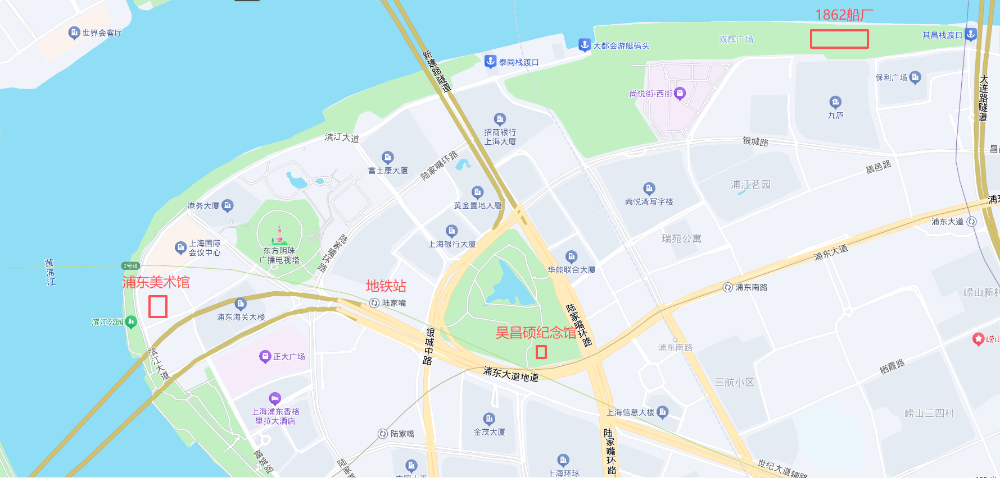
13:00 桂林路站 · 9号线→2号线→陆家嘴
14:30 浦东美术馆 · 120min
16:40 吴昌硕纪念馆（百年老宅）· 50min
17:40 上海船厂1862 · 50min
18:30 聚餐 · 60min
19:40 晚间滨江散步 · 20:20考察活动结束
Route · 行程总览 | 周二 13:00 — 20:20
Background · 考察背景01 / 17
Why This Trip
建筑与历史对话
的三种方式
陆家嘴浓缩了从传统民居到现代金融中心、再到工业遗产再生的完整谱系。恰逢浦东美术馆"让·努维尔"个展，为团队提供近距离接触国际大师建筑理念的机会。
幸存吴昌硕纪念馆——被摩天楼包围的百年老宅1914
框景浦东美术馆——纯净容器，将历史纳入2021
再生上海船厂1862——保留工业结构，植入当代功能2020
每一代建筑如何回应自己的时代？我们如何在工作中处理"历史与创新"的关系？
第一幕 · 框景01 / 17
Act II
浦东美术馆
框景——纯净容器，将历史作为景观纳入。
2021年 · 让·努维尔 · 滨江大道2777号
浦东美术馆 · 档案01 / 17
让·努维尔 Jean Nouvel · 法国建筑大师
光的圣殿
占地1.3万㎡，建筑面积4万㎡。核心设计理念："建筑属于它的场所与时间"。
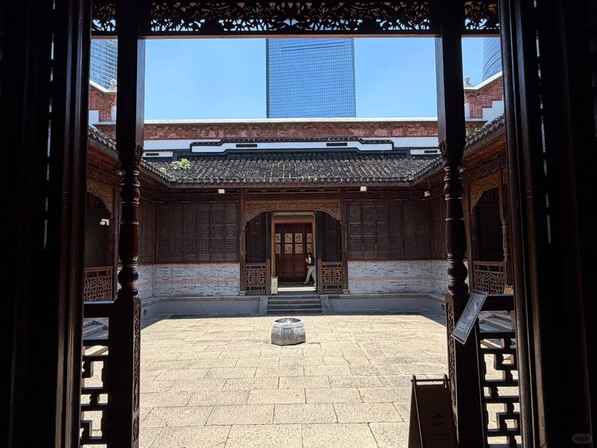
让·努维尔个展 · 海报
镜厅二层巨型玻璃幕墙 55m×12m框景
露台360°看陆家嘴、外滩、黄浦江全景
中厅高30余米通高空间，自然光天窗光影
努维尔个展：在自己的建筑里办回顾展。
展期 2026.06.27 → 08.31
— "在我脑中，在我眼中……归属……"
※ 17:00前参观完成，后为夜场参观
建筑空间01 / 17
Gallery · 空间影像
镜厅 · 露台 · 光影
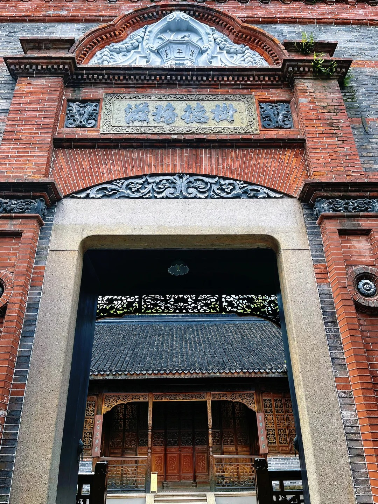
镜厅 · 框景外滩
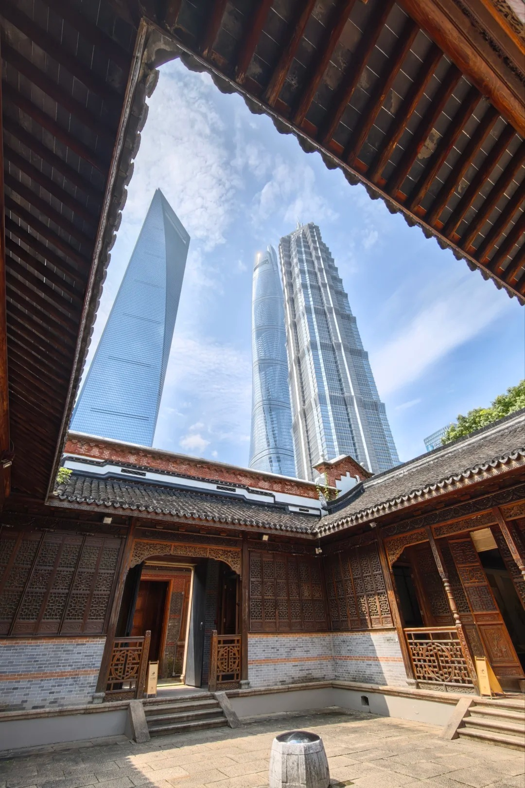
中央展厅 · 光的圣殿
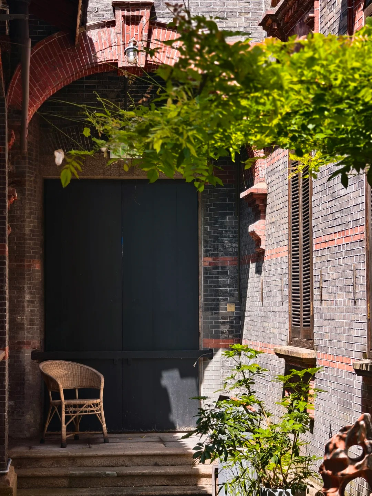
顶层露台 · 城市全景
白色混凝土 · 玻璃 · 金属——体量纯净，光线在不同时分在建筑内部流动。
第二幕 · 幸存01 / 17
Act I
吴昌硕纪念馆
幸存——被摩天楼包围的百年老宅。
1914年 · 传统工匠宅 · 陆家嘴东路15号
吴昌硕纪念馆 · 档案01 / 17
原名传统工匠宅 · 中西合璧式石库门
百年老宅
陆家嘴仅存的百年老宅。2003年因金融城建设整体平移50米至现址，为城市更新中保护历史建筑的经典案例。
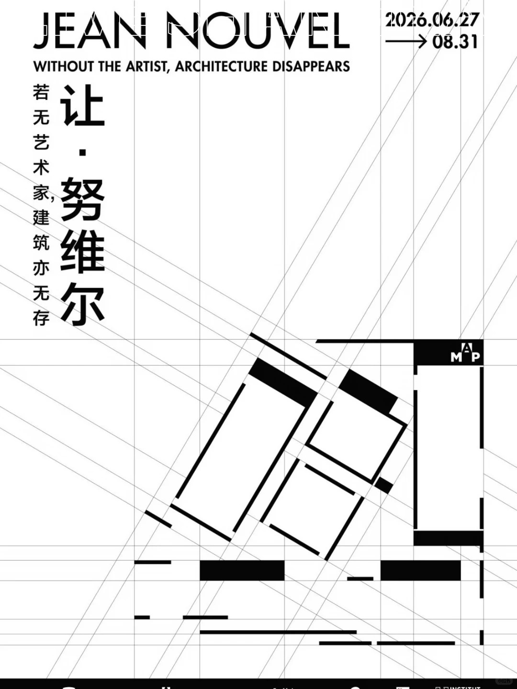
老宅与摩天楼同框
结构砖木混合，硬山式屋顶，小青瓦
装饰西式花卉 + 中式吉祥图案
馆藏吴昌硕书画篆刻约100余件
站在老宅庭院中，抬头即是上海中心 · 金茂大厦 · 环球金融中心。
— 新旧对视
空间与细节01 / 17
Gallery · 建筑空间
中西合璧 · 百年细节
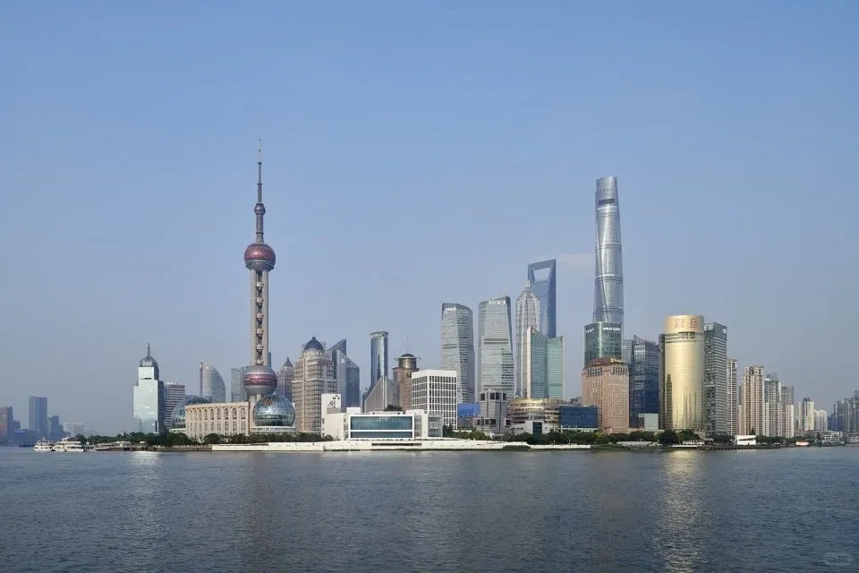
大门立面
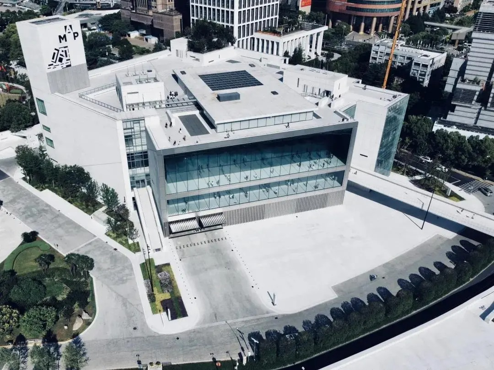
内部庭院空间
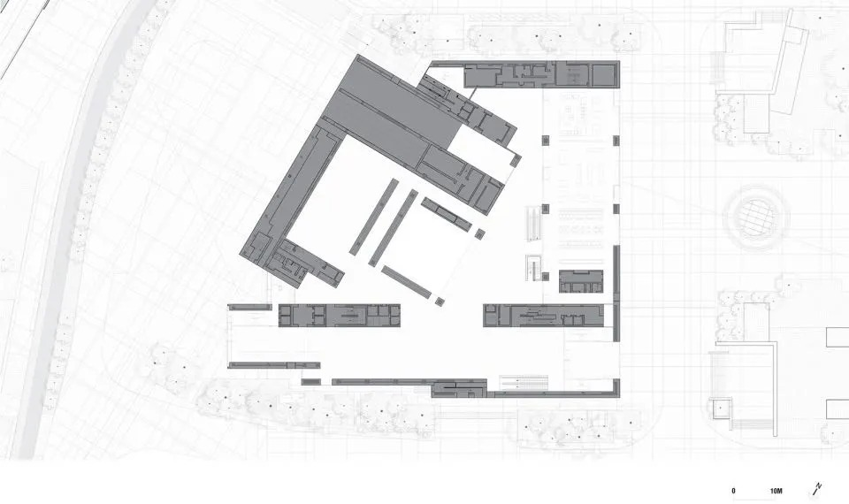
中西合璧装饰细节
砖雕门楼 · 彩色玻璃 · 西式拱券与中式纹样——海派文化"海纳百川"的早期基因
第三幕 · 再生01 / 17
Act III
上海船厂 1862
再生——保留工业结构，植入当代功能。
1862年始建 · 隈研吾改造 · 滨江大道即墨路
上海船厂1862 · 档案01 / 17
隈研吾 Kengo Kuma · "负建筑"理念
工业重生
原上海船厂造机车间，清同治元年始建。隈研吾耗时9年，将中国近代最早工业建筑改造为商业综合体。
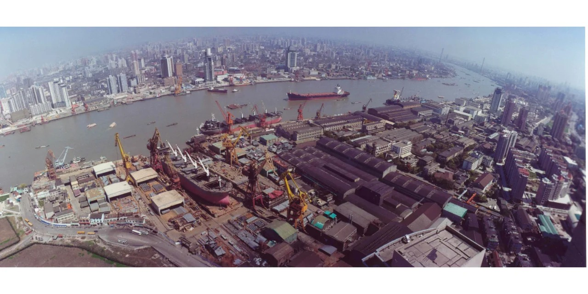
上海船厂1862 · 全景
结构保留排架、屋顶桁架、红砖墙记忆
材料砖+混凝土柱，植入玻璃·钢·木交织
功能剧场·画廊·餐饮·零售新生
"不是推倒重来，而是在时间层叠中找到新空间。"
空间与结构01 / 17
Gallery · 新旧交织
工业遗迹 · 当代空间
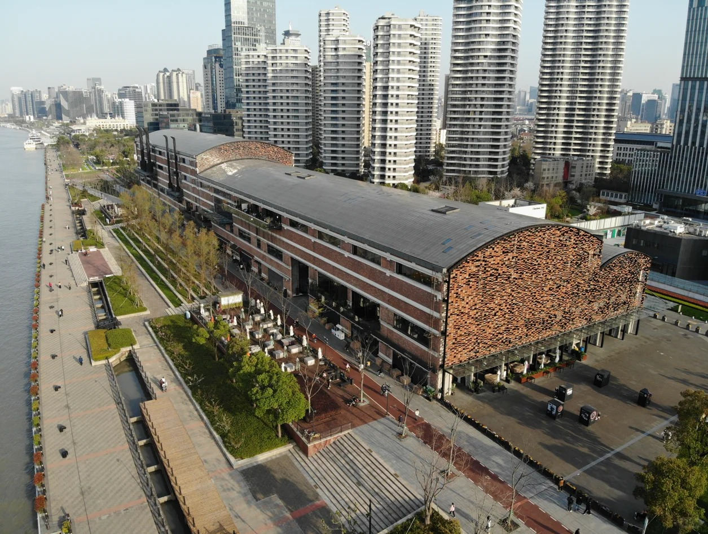
保留的排架结构
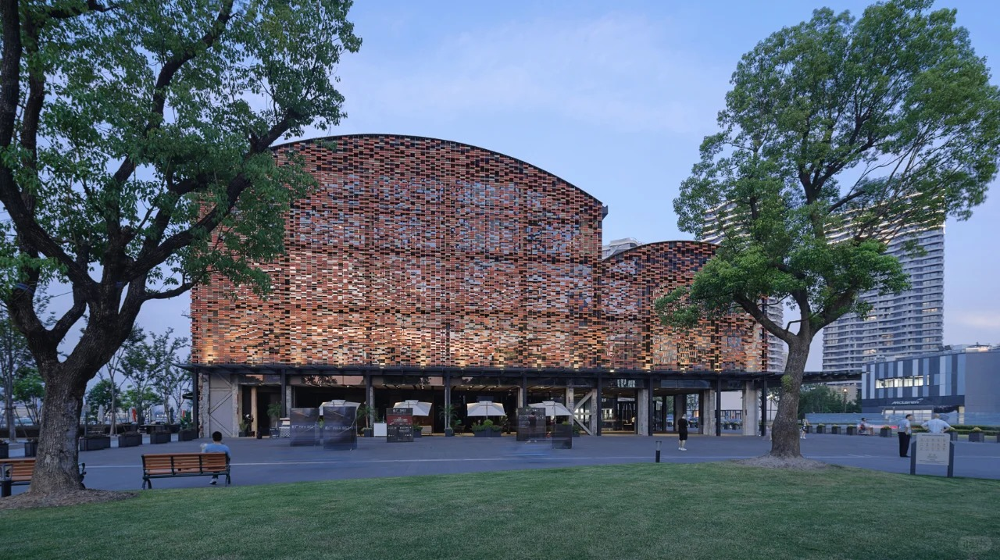
新旧材料的并置
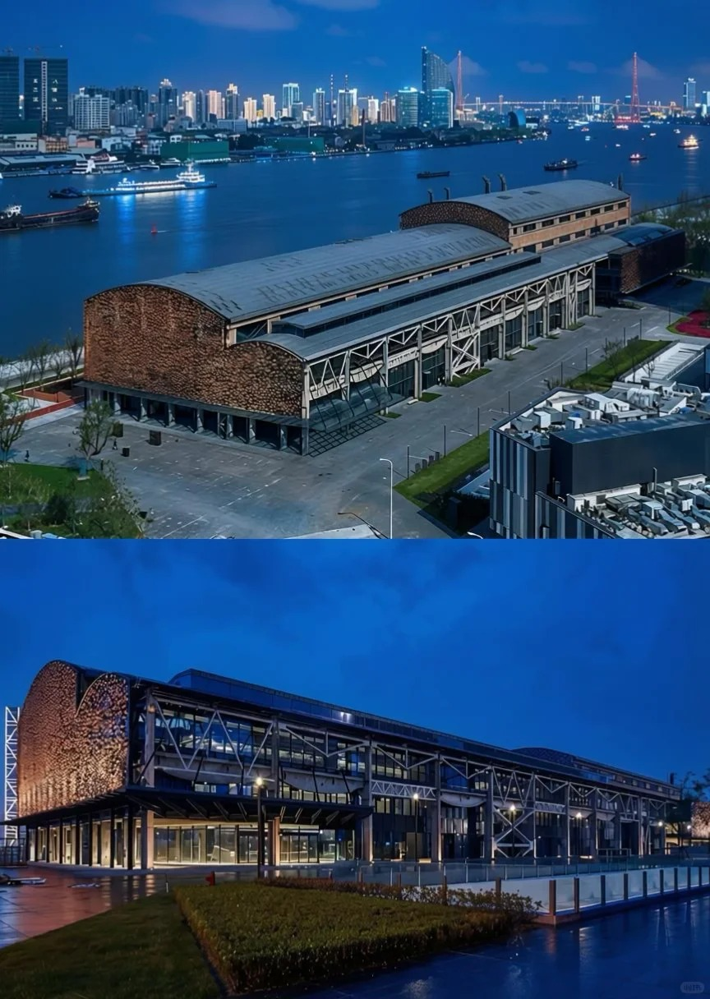
工业结构细节
红砖 · 钢架 · 玻璃——保留的工业结构与当代材料形成"新旧交织"
更多空间01 / 17
Gallery · 四大看点
剧场 · 船坞 · 商业
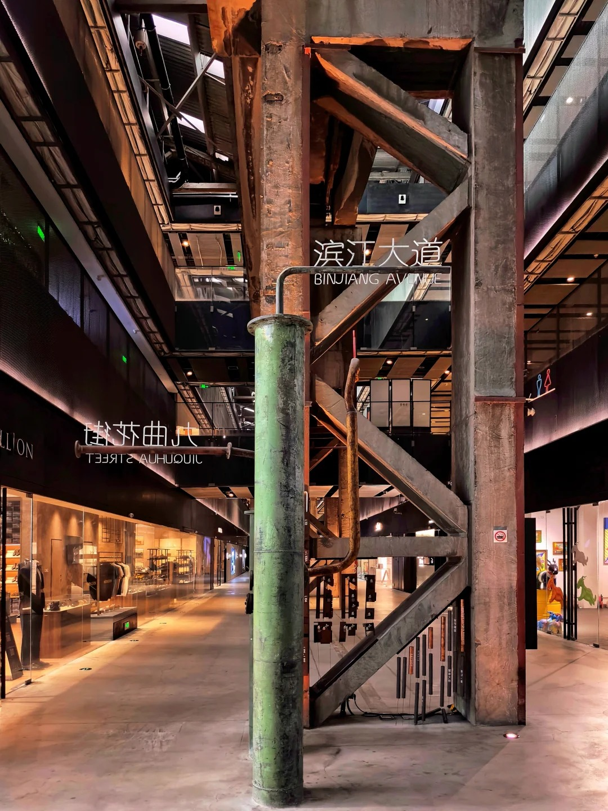
1862时尚艺术中心
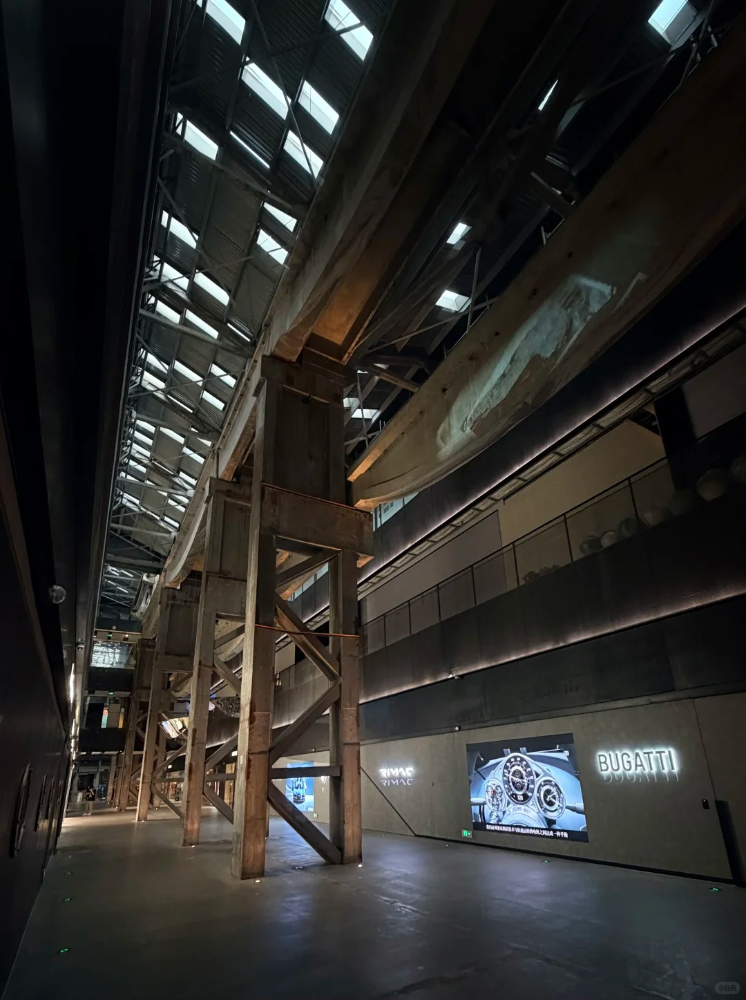
商业空间与工业对话
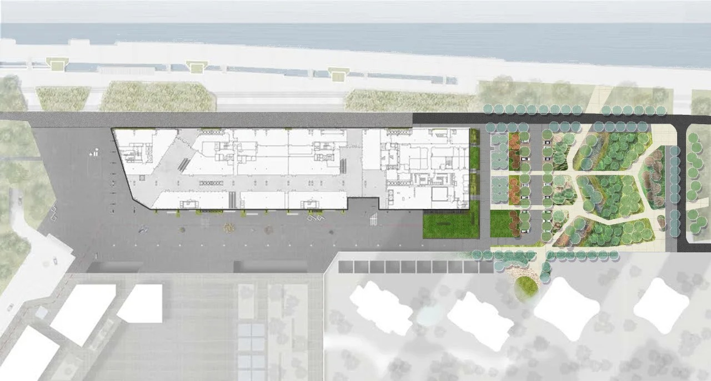
向滨江打开的公共空间
原车间改造的800座剧场 · 保留的干船坞 · 各楼层室内设计如何与工业空间对话
Interlude01 / 17
19:40 — 20:20
晚间滨江散步
浦东美术馆 → 上海船厂1862
全程 2.5km · 沿江步道
沿途看点01 / 17
从美术馆到船厂 · 2.5km
徒步路线
0.0km浦东美术馆出发——回望美术馆全貌起点
0.5km滨江观景平台——正对浦西外滩观景
1.5km老船坞遗址——遗留船坞、缆桩遗迹
2.0km滨江绿道——公共艺术装置公共
2.5km船厂1862到达——红砖墙面与钢架终点
Summary · 对比01 / 17
Core Comparison
三个考察点 · 核心对比
吴昌硕纪念馆
浦东美术馆
上海船厂
年代
1914
2021
1862/2020
类型
传统民居
当代美术馆
工业厂房
方式
幸存·被包围
框景·容器
再生·植入
建筑师
传统工匠
让·努维尔
隈研吾
材料
砖木·青瓦
白混凝土
红砖·钢架
感受
亲切·内省
开阔·通透
高大·粗犷
核心线索：三种"历史对话"的答案——从被动幸存，到主动框景，再到有机再生
Closing01 / 17
Tasks & Notes
建筑是时间的容器
每一代人都在上面留下自己的印记。
👟 舒适便鞋 · 全程约1.2万步 | ☔ 雨天改打车约20分钟
考察点 ①
拍一张老宅与摩天楼同框的"新旧对话"照片
13:00 桂林路站集合 · 20:20 考察活动结束